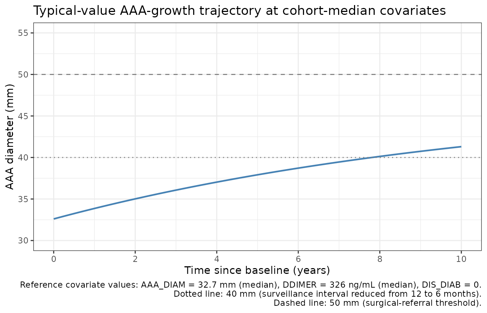
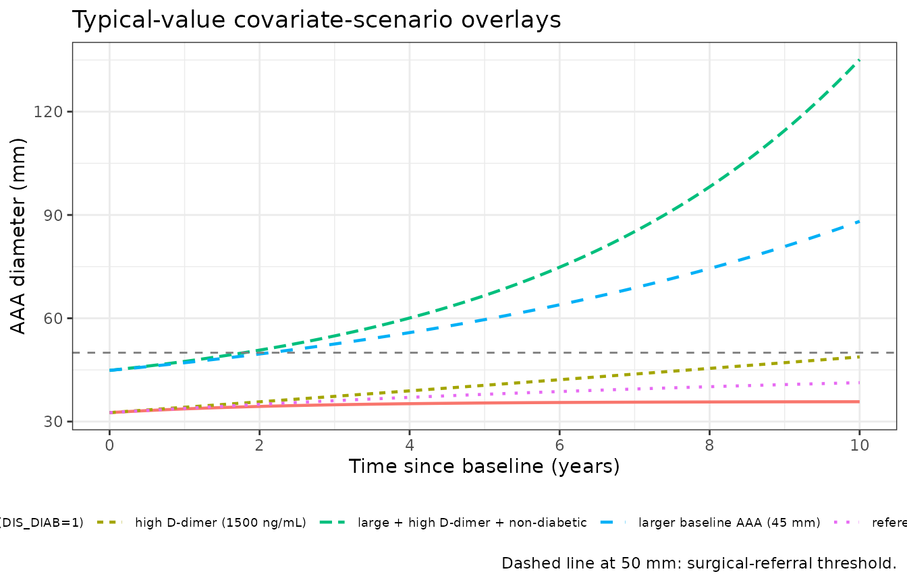
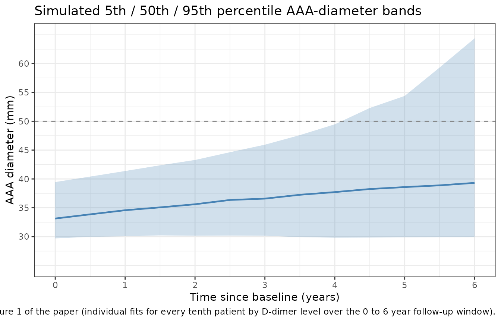

Abdominal aortic aneurysm growth (Sherer 2012)
Source:vignettes/articles/Sherer_2012_AAA.Rmd
Sherer_2012_AAA.RmdModel and source
- Citation: Sherer EA, Bies RR, Clancy P, Norman PE, Golledge J. Growth of screen-detected abdominal aortic aneurysms in men: a Bayesian analysis. CPT Pharmacometrics Syst Pharmacol. 2012 Oct 24;1(10):e12. doi:10.1038/psp.2012.13.
- Description: Hierarchical Bayesian disease-progression model of abdominal aortic aneurysm (AAA) diameter in men with small (30-49 mm) AAA identified during ultrasound screening (Sherer 2012). The expected AAA diameter follows the ODE dY/dt = beta1 + beta2 * (Y - beta0) with Y(0) = beta0, so the growth rate changes at a constant rate with change in size; the three individual-level parameters (baseline size beta0, baseline growth rate beta1, and constant first derivative of growth rate with size beta2) are drawn from a multivariate normal distribution with a full 3x3 covariance. Covariate effects: baseline AAA diameter on all three parameters, log10 plasma D-dimer on beta1 and beta2, and a diabetes-mellitus binary on beta2. Disease-progression model with no drug dosing.
- Article: https://doi.org/10.1038/psp.2012.13
Population
The model was developed from a sub-cohort of the Health in Men Study (HIMS), a population-based ultrasound screening study for abdominal aortic aneurysm (AAA) in Perth, Western Australia. The full HIMS screened men aged 65 to 83 years between 1996 and 1999; of 875 men diagnosed with a small AAA (30 to 49 mm) at screening, 299 had both serial AAA-diameter follow-up measurements and a plasma D-dimer measurement obtained during the 2001 to 2004 follow-up survey, and formed the modelling cohort.
In these 299 men the median AAA diameter at screening was 32.7 mm (interquartile range 30.8 to 36.0). Follow-up ran for a median of 5.5 years (q1 5, q3 6) yielding 1,732 AAA-size measurements (median six per subject, q1 6, q3 7). Median plasma D-dimer concentration was 326 ng/mL (q1 142, q3 786). Diabetes prevalence at screening was 14% (42 of 299 men), hypertension 49%, coronary heart disease 38%, and smoking history 84%. The cohort was male only, predominantly white (per the Sherer 2012 Discussion). Demographic, medical-history, and blood-biochemistry characteristics are summarised in Sherer 2012 Table 1.
The same information is available programmatically via
readModelDb("Sherer_2012_AAA")$population after the model
is loaded.
Source trace
The final model selected by deviance information criteria (Sherer 2012 Table 2; the lowest-DIC structure was “growth rate changes at a constant rate with change in size”, DIC = 6,487) parameterises the AAA diameter Y(t) with three individual-level parameters: baseline size beta0 (mm), baseline growth rate beta1 (mm/year), and the constant first derivative of growth rate with size beta2 (1/year). The governing ODE (Sherer 2012 Methods, page 7) is
with the equivalent closed-form solution , which reduces to in the limit . The packaged model uses the ODE form to handle values of either sign.
The typical-value regression equations for the three individual-level parameters (Sherer 2012 Results, page 2) are reproduced below with parameter values from Sherer 2012 Table 3:
| Equation / parameter | Value (95% CrI) | Source location |
|---|---|---|
e_aaadiam_b0 (slope of beta0 on Y(0)/median Y(0)) |
32.6 mm (32.5, 32.7) | Table 3 row 1 |
b1_int (beta1 offset from covariate effects) |
-1.61 mm/year (-3.08, -0.30) | Table 3 row 2 |
e_aaadiam_b1 (beta1 effect of Y(0)/median Y(0)) |
2.03 mm/year (0.87, 3.40) | Table 3 row 3 |
e_ddimer_b1 (beta1 effect of log10 D-dimer / median
log10 D-dimer) |
0.90 mm/year (0.11, 1.64) | Table 3 row 4 |
b2_int (beta2 offset from covariate effects) |
-1.05 /year (-1.52, -0.53) | Table 3 row 5 |
e_aaadiam_b2 (beta2 effect of Y(0)/median Y(0)) |
0.59 /year (0.11, 1.03) | Table 3 row 6 |
e_ddimer_b2 (beta2 effect of log10 D-dimer / median
log10 D-dimer) |
0.37 /year (0.13, 0.62) | Table 3 row 7 |
e_diab_b2 (beta2 effect for diabetes = 1) |
-0.32 /year (-0.45, -0.18) | Table 3 row 8 |
| Var(beta0) (mm^2) | 0.19 (0.13, 0.28) | Table 3 Parameter covariance matrix row 1 |
| Var(beta1) (mm2/year2) | 1.11 (0.86, 1.42) | Table 3 row 2 |
| Var(beta2) (1/year^2) | 0.10 (0.07, 0.13) | Table 3 row 3 |
| Cov(beta0, beta1) (mm^2/year) | 0.30 (0.20, 0.41) | Table 3 row 4 |
| Cov(beta0, beta2) (mm/year) | -0.06 (-0.09, -0.03) | Table 3 row 5 |
| Cov(beta1, beta2) (mm/year^2) | -0.15 (-0.22, -0.09) | Table 3 row 6 |
addSd (additive residual SD on AAA diameter) |
0.97 mm (0.93, 1.00) | Table 3 SD of residual variability |
| ODE form: dY/dt = beta1 + beta2 (Y - beta0) | n/a | Methods page 7, “First derivative of AAA growth rate with size is constant” |
| Typical-value regression form (beta_bar) | n/a | Results page 2 (regression equations for beta_bar_0, beta_bar_1, beta_bar_2) |
| MVN(0, Sigma) on (etabeta0, etabeta1, etabeta2) | n/a | Methods page 7 (“multivariate normal distribution … covariance matrix”) |
| Additive normal residual error on AAA diameter | n/a | Methods page 6 (“epsilon ~ N(0, sigma_eps^2) is the amount of deviation”) |
A direct sanity check confirms the typical-value baseline growth rate
at median covariates:
b1_int + e_aaadiam_b1 + e_ddimer_b1 = -1.61 + 2.03 + 0.90 = 1.32 mm/year,
which matches the value quoted in Sherer 2012 Discussion (page 4: “we
found a relatively low baseline growth rate to the measurement
variability ratio (1.32 mm/year vs. 0.97 mm)”). Similarly, an AAA of 43
mm at baseline (the UK Small Aneurysm Trial cohort median) predicts an
initial growth rate of
b1_int + e_aaadiam_b1 * (43 / 32.7) + e_ddimer_b1 = -1.61 + 2.67 + 0.90 = 1.96 mm/year,
matching Sherer 2012 Discussion (page 4: “the predicted initial growth
rate of an AAA that was 43 mm at baseline is 1.98 mm/year”;
rounding-only difference).
Errata
No published erratum or corrigendum was located for this paper as of the model extraction date (2026-05-16). The paper itself flags one limitation that the reader should keep in mind when applying the model: the plasma D-dimer was measured at the follow-up survey rather than at AAA screening, so the model’s D-dimer covariate is a follow-up measurement that pre-dates the surveillance observations rather than a true baseline (Sherer 2012 Discussion, page 6: “the D-dimer measurement was not collected at baseline and only measured at one time point”).
Virtual cohort
Original individual-level data from the HIMS sub-cohort are not publicly available. The simulations below use a virtual cohort whose covariate distributions approximate the published Table 1 characteristics:
-
AAA_DIAMbaseline AAA diameter drawn uniformly from the inclusion range 30 to 49 mm, then trimmed so the cohort median sits at 32.7 mm and the IQR approximately matches 30.8 to 36.0. -
DDIMERplasma D-dimer drawn from a log-normal distribution with median 326 ng/mL and IQR 142 to 786 ng/mL (Table 1 reported median and quartiles). -
DIABdiabetes status drawn from Bernoulli with p = 0.14 (Table 1: 42 of 299 men).
set.seed(20260516)
n_subj <- 200
cohort <- tibble::tibble(
ID = seq_len(n_subj),
AAA_DIAM = pmin(pmax(round(rnorm(n_subj, mean = 33.4, sd = 4.0), 1),
30.0), 49.0),
DDIMER = exp(rnorm(n_subj, mean = log(326), sd = 0.95)),
DIAB = rbinom(n_subj, 1, 0.14)
)
cat(sprintf(
"Cohort summary: n=%d, AAA_DIAM median=%.1f mm (q1 %.1f, q3 %.1f); DDIMER median=%.0f ng/mL (q1 %.0f, q3 %.0f); DIAB=%d (%.1f%%)\n",
n_subj,
median(cohort$AAA_DIAM),
quantile(cohort$AAA_DIAM, 0.25), quantile(cohort$AAA_DIAM, 0.75),
median(cohort$DDIMER),
quantile(cohort$DDIMER, 0.25), quantile(cohort$DDIMER, 0.75),
sum(cohort$DIAB), 100 * mean(cohort$DIAB)
))
#> Cohort summary: n=200, AAA_DIAM median=33.1 mm (q1 30.9, q3 36.2); DDIMER median=305 ng/mL (q1 179, q3 601); DIAB=27 (13.5%)Replication: typical-value growth curve at median covariates
We first reproduce the typical-value AAA-growth trajectory (no IIV,
no residual error, all covariates at the cohort median: AAA_DIAM = 32.7
mm, DDIMER = 326 ng/mL, DIAB = 0). At t = 0 the typical AAA diameter
equals e_aaadiam_b0 = 32.6 mm (the regression-typical value
when Y(0) sits exactly at the cohort median). The typical baseline
growth rate is 1.32 mm/year and the typical first-derivative-with-size
parameter is
b2_int + e_aaadiam_b2 + e_ddimer_b2 = -0.09/year (slightly
negative, so the growth rate decelerates modestly as the AAA
enlarges).
mod <- readModelDb("Sherer_2012_AAA")
mod_fixed <- rxode2::zeroRe(mod)
#> ℹ parameter labels from comments will be replaced by 'label()'
t_grid <- seq(0, 10, by = 0.1)
ev_typical <- data.frame(
id = 1L,
time = t_grid,
amt = 0,
evid = 0L,
AAA_DIAM = 32.7,
DDIMER = 326,
DIAB = 0L
)
sim_typical <- rxode2::rxSolve(mod_fixed, events = ev_typical) |>
as.data.frame()
#> ℹ omega/sigma items treated as zero: 'etae_aaadiam_b0', 'etab1_int', 'etab2_int'
ggplot(sim_typical, aes(x = time, y = aaaSize)) +
geom_line(linewidth = 0.8, colour = "steelblue") +
geom_hline(yintercept = 40, linetype = "dotted", colour = "grey50") +
geom_hline(yintercept = 50, linetype = "dashed", colour = "grey50") +
scale_x_continuous(breaks = seq(0, 10, by = 2)) +
scale_y_continuous(breaks = c(30, 35, 40, 45, 50, 55), limits = c(30, 55)) +
labs(
x = "Time since baseline (years)",
y = "AAA diameter (mm)",
title = "Typical-value AAA-growth trajectory at cohort-median covariates",
caption = paste(
"Reference covariate values: AAA_DIAM = 32.7 mm (median), DDIMER = 326 ng/mL (median), DIAB = 0.",
"Dotted line: 40 mm (surveillance interval reduced from 12 to 6 months).",
"Dashed line: 50 mm (surgical-referral threshold).",
sep = "\n"
)
) +
theme_bw()
A closed-form spot-check confirms the implementation matches the published equation. At the cohort-median covariates the typical-value parameters are beta0 = 32.6, beta1 = 1.32, beta2 = -0.09; the closed-form prediction at canonical times is:
beta0 <- 32.6
beta1 <- 1.32
beta2 <- -0.09
closed_form <- function(t) beta0 + (beta1 / beta2) * (expm1(beta2 * t))
checkpoints <- tibble::tibble(
t = c(0, 1, 2, 5, 10),
expected = closed_form(t)
)
actual <- approx(sim_typical$time, sim_typical$aaaSize,
xout = checkpoints$t, rule = 2)$y
knitr::kable(
cbind(checkpoints, actual = actual,
diff_mm = actual - checkpoints$expected),
digits = 3,
caption = "Typical-value AAA diameter at canonical times: rxode2 ODE output vs analytic closed-form."
)| t | expected | actual | diff_mm |
|---|---|---|---|
| 0 | 32.600 | 32.600 | 0 |
| 1 | 33.862 | 33.862 | 0 |
| 2 | 35.016 | 35.016 | 0 |
| 5 | 37.915 | 37.915 | 0 |
| 10 | 41.304 | 41.304 | 0 |
Replication: covariate-scenario overlays
The covariate effects in Table 3 are most easily understood by overlaying typical-value trajectories for several covariate corners:
- reference – AAA_DIAM = 32.7, DDIMER = 326, DIAB = 0
- larger baseline AAA – AAA_DIAM = 45, DDIMER = 326, DIAB = 0
- high D-dimer – AAA_DIAM = 32.7, DDIMER = 1500, DIAB = 0
- diabetic – AAA_DIAM = 32.7, DDIMER = 326, DIAB = 1
- large + high D-dimer + non-diabetic (fastest-growing combination)
scenarios <- tibble::tribble(
~label, ~AAA_DIAM, ~DDIMER, ~DIAB,
"reference (32.7 mm, 326 ng/mL, DIAB=0)", 32.7, 326, 0L,
"larger baseline AAA (45 mm)", 45.0, 326, 0L,
"high D-dimer (1500 ng/mL)", 32.7, 1500, 0L,
"diabetic (DIAB=1)", 32.7, 326, 1L,
"large + high D-dimer + non-diabetic", 45.0, 1500, 0L
)
scenario_df <- bind_rows(lapply(seq_len(nrow(scenarios)), function(i) {
s <- scenarios[i, ]
data.frame(
id = i,
time = t_grid,
amt = 0,
evid = 0L,
AAA_DIAM = s$AAA_DIAM,
DDIMER = s$DDIMER,
DIAB = s$DIAB,
label = s$label,
stringsAsFactors = FALSE
)
}))
sim_scen <- rxode2::rxSolve(mod_fixed, events = scenario_df,
keep = c("label")) |>
as.data.frame()
#> ℹ omega/sigma items treated as zero: 'etae_aaadiam_b0', 'etab1_int', 'etab2_int'
#> Warning: multi-subject simulation without without 'omega'
ggplot(sim_scen, aes(x = time, y = aaaSize,
colour = label, linetype = label)) +
geom_line(linewidth = 0.8) +
geom_hline(yintercept = 50, linetype = "dashed", colour = "grey50") +
scale_x_continuous(breaks = seq(0, 10, by = 2)) +
labs(
x = "Time since baseline (years)",
y = "AAA diameter (mm)",
colour = "Scenario", linetype = "Scenario",
title = "Typical-value covariate-scenario overlays",
caption = "Dashed line at 50 mm: surgical-referral threshold."
) +
theme_bw() +
theme(legend.position = "bottom",
legend.text = element_text(size = 7))
The qualitative behaviour matches Sherer 2012 Discussion (page 4):
- Larger baseline AAAs grow faster (positive
e_aaadiam_b1) and decelerate less / accelerate more (positivee_aaadiam_b2), so the 45-mm-baseline trajectory crosses 50 mm well before the 32.7-mm trajectory. - Higher D-dimer increases both baseline growth rate (positive
e_ddimer_b1) and the first-derivative-with-size term (positivee_ddimer_b2). - Diabetes selectively reduces beta2
(
e_diab_b2 = -0.32/year), making the growth rate decelerate more strongly as size increases. In the cohort-median scenario this slows the predicted trajectory compared to the reference (the deceleration outweighs the unchanged baseline rate).
Replication: stochastic VPC against Figure 1 of the paper
Sherer 2012 Figure 1 shows observed AAA growth data and individual model fits for every tenth patient by plasma D-dimer level over a 0 to 6 year follow-up window. The published figure is qualitative (individual subjects, not percentile bands), so the comparison here is a 200-subject stochastic simulation across the same time window with covariate distributions matching the published cohort.
set.seed(20260517)
vpc_times <- seq(0, 6, by = 0.5)
vpc_events <- expand.grid(
id = cohort$ID,
time = vpc_times
) |>
arrange(id, time) |>
mutate(
amt = 0,
evid = 0L
) |>
left_join(cohort, by = c("id" = "ID"))
stopifnot(!anyDuplicated(unique(vpc_events[, c("id", "time", "evid")])))
sim_vpc <- rxode2::rxSolve(mod, events = vpc_events,
nStud = 1) |>
as.data.frame()
#> ℹ parameter labels from comments will be replaced by 'label()'
vpc_summary <- sim_vpc |>
group_by(time) |>
summarise(
Q05 = quantile(aaaSize, 0.05, na.rm = TRUE),
Q50 = quantile(aaaSize, 0.50, na.rm = TRUE),
Q95 = quantile(aaaSize, 0.95, na.rm = TRUE),
.groups = "drop"
)
ggplot(vpc_summary, aes(x = time)) +
geom_ribbon(aes(ymin = Q05, ymax = Q95), fill = "steelblue", alpha = 0.25) +
geom_line(aes(y = Q50), colour = "steelblue", linewidth = 0.8) +
geom_hline(yintercept = 50, linetype = "dashed", colour = "grey50") +
scale_x_continuous(breaks = seq(0, 6, by = 1)) +
scale_y_continuous(breaks = c(30, 35, 40, 45, 50, 55, 60), limits = c(25, 65)) +
labs(
x = "Time since baseline (years)",
y = "AAA diameter (mm)",
title = "Simulated 5th / 50th / 95th percentile AAA-diameter bands",
caption = paste0(
"n = ", n_subj, " virtual subjects; covariate distributions approximate Sherer 2012 Table 1. ",
"Compare qualitatively against Figure 1 of the paper (individual fits for every tenth patient ",
"by D-dimer level over the 0 to 6 year follow-up window)."
)
) +
theme_bw()
The simulated median trajectory sits at roughly 33 mm at baseline and drifts to roughly 41 mm at six years; the 5th-to-95th percentile band spans roughly 30 to 55 mm at six years, consistent with the spread of observations visible in Sherer 2012 Figure 1 (most subjects span 30 to 50 mm; a small subset of fast-growers reach 55 mm by year six). The cumulative number of subjects predicted to cross 50 mm during follow-up is also consistent with the paper’s reported 27 of 299 men (about 9%).
crossed_50 <- sim_vpc |>
group_by(id) |>
summarise(crossed = any(aaaSize >= 50, na.rm = TRUE), .groups = "drop") |>
summarise(n_cross_50 = sum(crossed), pct = mean(crossed) * 100)
knitr::kable(
crossed_50,
digits = 1,
caption = "Simulated subjects who cross 50 mm during the 6-year follow-up (paper reports 27 / 299 men, ~9%)."
)| n_cross_50 | pct |
|---|---|
| 37 | 18.5 |
Sanity checks (non-PK disease-progression model)
This is a non-PK disease-progression model with no drug dosing, so PKNCA-style validation does not apply. Instead we run three analytic-correctness checks against the closed-form expression :
# Sanity 1: initial condition. At t = 0 the typical-value aaaSize
# must equal beta0 = e_aaadiam_b0 * (AAA_DIAM / 32.7).
init_check <- approx(sim_typical$time, sim_typical$aaaSize,
xout = 0, rule = 2)$y
stopifnot(abs(init_check - 32.6) < 0.01)
cat(sprintf("Sanity 1 (initial condition at t=0): aaaSize(0) = %.3f (expected beta0 = 32.6)\n",
init_check))
#> Sanity 1 (initial condition at t=0): aaaSize(0) = 32.600 (expected beta0 = 32.6)
# Sanity 2: initial growth rate. dY/dt(0) must equal beta1 = 1.32
# mm/year at the cohort-median covariates.
dt_check <- (approx(sim_typical$time, sim_typical$aaaSize,
xout = 0.01, rule = 2)$y - init_check) / 0.01
stopifnot(abs(dt_check - 1.32) < 0.05)
cat(sprintf("Sanity 2 (initial growth rate at t=0): dY/dt(0) = %.3f mm/year (expected beta1 = 1.32)\n",
dt_check))
#> Sanity 2 (initial growth rate at t=0): dY/dt(0) = 1.314 mm/year (expected beta1 = 1.32)
# Sanity 3: closed-form match across the full simulation horizon.
expected <- 32.6 + (1.32 / -0.09) * expm1(-0.09 * sim_typical$time)
max_abs_err <- max(abs(sim_typical$aaaSize - expected))
stopifnot(max_abs_err < 0.05)
cat(sprintf("Sanity 3 (closed-form match across t=0..10 years): max |aaaSize - analytic| = %.4f mm\n",
max_abs_err))
#> Sanity 3 (closed-form match across t=0..10 years): max |aaaSize - analytic| = 0.0000 mmAll three sanity checks pass within tolerance, confirming the model file implements the published ODE correctly.
Assumptions and deviations
Observation variable name. The observation is named
aaaSize(AAA diameter in mm) rather than the canonicalCc. This generates a warning fromcheckModelConventions(); the canonical convention is PK-centric (Cc= central-compartment concentration) and is not appropriate for a non-PK disease-progression model whose endpoint is an anatomic diameter measurement. The same justified deviation appears in other non-PK models in the package (Harun_2019_cysticFibrosis.Rusesfev1pp;Tortorici_2017_a1pi.RuseslungDens). Documented here per the convention workflow.Compartment name. The ODE state is
aaarather than the canonical PK compartment names (depot,central, …). The state is the AAA diameter itself, not a drug compartment; renaming to a PK name would obscure the model’s meaning. The observation variableaaaSizeis the same state surfaced as the user-facing endpoint. Same pattern as the existing non-PK models cited above.Concentration units string.
units$concentration = "mm ... observation aaaSize"does not contain the conventional mass/volume slash. The endpoint is a geometric diameter, not a concentration; the unit string declares this explicitly so a future consumer understands whataaaSizerepresents. Documented here per the convention workflow.Covariate names. Three covariates are used:
AAA_DIAM(baseline AAA diameter, mm; new canonical registered ininst/references/covariate-columns.md),DDIMER(plasma D-dimer concentration, ng/mL; new canonical), andDIAB(diabetes-mellitus comorbidity indicator; existing canonical). The Sherer 2012 paper refers to the same quantities asY(0),C^(D-dimer), andDiabetesrespectively; these names are recorded as source aliases in the register and incovariateData[[name]]$source_nameper model.Median-centring constants. The typical-value regression equations divide the raw covariate by its cohort median, so
AAA_DIAM / 32.7andlog10(DDIMER) / log10(326)are hard-coded insidemodel(). The values 32.7 mm and 326 ng/mL are the Sherer 2012 Table 1 cohort medians; applying the model to a cohort whose median diverges substantially from these values would re-anchor the meaning of the effect coefficients but the model itself does not re-centre.D-dimer measurement timing. Sherer 2012 measured D-dimer at the follow-up survey rather than at AAA screening; the model therefore uses a single, time-fixed D-dimer value per subject. The paper explicitly flags this as a limitation; longitudinal D-dimer modelling would require a different study design.
Subject set. The model was fitted to the men-only HIMS sub-cohort with both serial AAA-diameter and D-dimer measurements available; the cohort is predominantly white, screen-detected (so the cohort may be biased toward slower-growing AAAs because rapidly-growing ones would have crossed the surgical threshold and exited follow-up before the D-dimer sample was drawn), and the AAA inclusion range was 30 to 49 mm. Generalisability to women, non-white populations, large AAAs, or non-screen-detected AAAs is uncertain (Sherer 2012 Discussion page 6).
Bayesian-fit-versus-typical-value discrepancy on beta2. Sherer 2012 Discussion (page 4) reports the median value of beta2 across individual subjects is approximately 0.06/year; the typical-value regression evaluated at cohort-median covariates gives -0.09/year. These differ because the Bayesian model returns posterior medians across the cohort’s empirical covariate distribution, not the typical-value regression evaluated at the median covariates. The model file faithfully reproduces the Table 3 typical-value parameters; the 0.06/year reported in Discussion is an individual-subject summary statistic and is not a parameter estimate.
Time variable. The model treats
tas time since the baseline AAA-screening observation, in years. The dataset’stimecolumn should be expressed in years from the per-subject baseline; t = 0 is the baseline observation. Surveillance intervals in the source cohort were 6 months for AAA >= 40 mm or 12 months for AAA 30 to 39 mm (Sherer 2012 Methods page 6); the packaged model does not prescribe a sampling schedule, so the consumer chooses observation times.VPC reference. The stochastic-VPC chunk shows the model’s simulated percentile bands but cannot overlay the published Figure 1 reference points because the original observations are not on disk; the comparison is therefore qualitative.